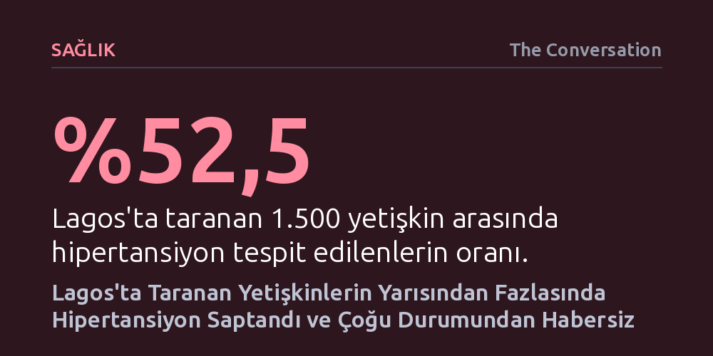

SAGLIK · The Conversation · 2026-10-19
Lagos'ta yapılan saha taraması, yetişkinlerin yüzde 52,5'inin hipertansiyon hastası olduğunu ve bunların üçte ikisinin durumundan habersiz yaşadığını ortaya koyuyor. Yüksek tansiyonu kontrol altında olanların oranı yalnızca yüzde 8,3 seviyesinde kalıyor.
Hipertansiyonun pahalı hastaneler ve uzman kardiyologlarla değil, birinci basamak sağlık çalışanları ve ucuz jenerik ilaçlarla önlenebilecek bir halk sağlığı meselesi olduğunu gösteriyor.

Dünya genelinde her yıl 10 milyondan fazla insanın hayatına mal olan hipertansiyon, inme, kalp yetmezliği ve kalp krizinin başlıca tetikleyicilerinden biri olmaya devam ediyor. Çoğu zaman ucuz ilaçlar ve basit yaşam tarzı değişiklikleriyle kontrol altına alınabilen bu kronik rahatsızlık, Sahra Altı Afrika'da giderek ağırlaşan bir yüke dönüşüyor. Dünya Sağlık Örgütü Nijerya'daki yetişkinlerde hipertansiyon yaygınlığını yaklaşık yüzde 36 olarak tahmin etse de sahadaki güncel veriler çok daha vahim bir tabloya işaret ediyor.
Kardiyologlardan oluşan bir araştırma ekibi, 2023 yılında 20 milyonu aşkın nüfusa sahip Lagos genelinde üç ay süren kapsamlı bir tarama gerçekleştirdi. Hastanelere, eczanelere, iş yerlerine ve kamusal alanlara kurulan tansiyon ölçüm istasyonlarında, sokaktan geçen yaklaşık 1.500 yetişkinin tansiyonu ölçüldü. Sonuçlar, kentteki yetişkinlerin yüzde 52,5'inin kan basıncının 140/90 mmHg veya üzerinde, yani hipertansif olduğunu belgeledi.
Araştırmanın ortaya koyduğu en ürkütücü bulgu ise farkındalık düzeyindeki çöküştü. Hipertansiyon tespit edilen bireylerin yüzde 65,3'ü yüksek tansiyonla yaşadığından tamamen habersizdi. Dahası, yüksek tansiyonu olanların yalnızca yüzde 13,8'i tansiyon ilacı alıyordu ve tansiyonu tıbben kontrol altında tutulabilenlerin oranı sadece yüzde 8,3'te kaldı. Bu durum, Lagos gibi devasa bir metropolde milyonlarca insanın ölümcül bir riskle habersizce dolaştığını kanıtlıyor.
Lagos'taki taramaya katılan hastalarla yapılan görüşmeler, hipertansiyon tedavisinin önündeki en büyük engelin ekonomik yetersizlikler olduğunu gösteriyor. Katılımcıların yüzde 57,3'ü ilaç masraflarının tamamını kendi ceplerinden karşılamak zorunda olduğunu bildirdi. Gelir düzeyinin son derece kırılgan olduğu topluluklarda bir aylık tansiyon ilacı masrafı çocukların okul giderleri veya günlük ulaşım masraflarıyla rekabet ettiğinde, hastalar tedaviyi ilk fırsatta terk ediyor.
Sorun yalnızca finansal kısıtlarla da bitmiyor; ciddi bir sağlık okuryazarlığı ve yanlış algı krizi mevcut. Düzenli tedavi gördüğünü söyleyen hastaların yüzde 22,4'ü, hekimlerin aksi yöndeki kesin uyarılarına rağmen ilaçlarını sadece 'kendilerini kötü hissettiklerinde' aldıklarını ifade ediyor. Yüksek tansiyonun çoğu zaman hiçbir klinik belirti vermeden kalıcı hasar bıraktığı gerçeği bilinmediğinden, hastalar tansiyonlarını hislerine göre yönetmeye çalışıyor.
Veriler ayrıca eğitim düzeyi ile hastalık riski arasında güçlü bir bağ olduğunu doğruluyor. Hiç resmi eğitim almamış bireylerin yüksek kan basıncı kategorisine girme olasılığı, eğitimli akranlarına kıyasla yaklaşık iki buçuk kat daha yüksek seyrediyor. Bu durum, sağlık iletişiminin en alt gelir ve eğitim gruplarına nüfuz edemediğini açıkça ortaya koyuyor.
Dünya genelinde hipertansiyon hastası olan her beş kişiden dördünün kan basıncı kontrolsüz durumda. Oysa bu krizi kontrol altına almak için yeni tıp teknolojilerine ya da astronomik bütçelere ihtiyaç yok. Patent süresi dolmuş, etkinliği kanıtlanmış güvenli tansiyon ilaçları ve Dünya Sağlık Örgütü'nün HEARTS paketinde yer alan basitleştirilmiş tedavi protokolleri halihazırda mevcut. Asıl dönüştürülmesi gereken şey, sağlık hizmetinin örgütlenme biçimi.
Kardiyoloji uzmanları mevcut hastane odaklı sistemin çıkmazını şu çarpıcı cümleyle özetliyor: "Eğer bir hasta bana hastanede ulaşıyorsa sistem zaten başarısız olmuştur." Tek bir kalp krizini üçüncü basamak bir ihtisas hastanesinde yoğun bakım şartlarında tedavi etmenin devasa maliyetiyle, birinci basamakta binlerce insanın risk faktörleri felç ya da kalp krizine dönüşmeden yönetilebilir.
Hemşirelerin ve toplum sağlığı çalışanlarının tansiyon ölçtüğü, belirlenmiş standart protokollere göre ilaç tedavisi başlatabildiği, reçete yenileyebildiği ve riskli vakaları uzmanlara sevk ettiği bir yapı, yeni hastaneler inşa etmekten çok daha ucuz ve etkilidir. Nijerya ve Sahra Altı Afrika genelinde ihtiyaç duyulan acil reform; taramayı kitleselleştirmek, ilaçları uygun fiyatla sunmak ve hipertansiyon yönetimini birinci basamak sağlık merkezlerine devretmektir.
Dünya Sağlık Örgütü ve Dünya Kalp Federasyonu, hipertansiyonun kontrol altına alınmasında küresel ölçekte yüzde 50'lik asgari bir hedef belirlenmesi çağrısında bulunuyor. Nijerya gibi yüksek nüfuslu ülkelerin birinci basamak sağlık sistemlerini güçlendirerek bu hedefe ulaşması, 2050 yılına kadar dünya genelinde en az 75 milyon önlenebilir ölümün önüne geçebilir.
Nijerya, 2026 Dünya Kalp Günü etkinliklerinin merkez üssü olarak başkent Abuja'da geniş katılımlı konferanslara, okul münazaralarına, halk yürüyüşlerine, kitlesel tansiyon taramalarına ve temel yaşam desteği eğitimlerine ev sahipliği yaptı. Ancak sivil toplum kuruluşlarının ve kardiyoloji derneklerinin yürüttüğü bu farkındalık etkinlikleri, devletin yapısal bir sağlık sistemi reformu gerçekleştirmemesi halinde kalıcı bir sonuca ulaşamaz. Mesele bireylerin tansiyonunu bir günlüğüne ölçmek değil, tanı alan herkesin kesintisiz ve karşılanabilir tedaviye erişmesini sağlamaktır.